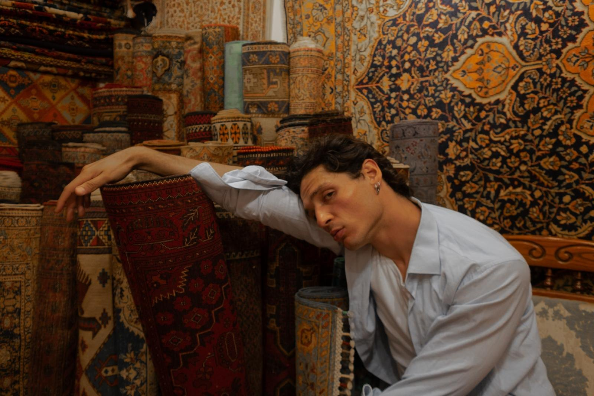
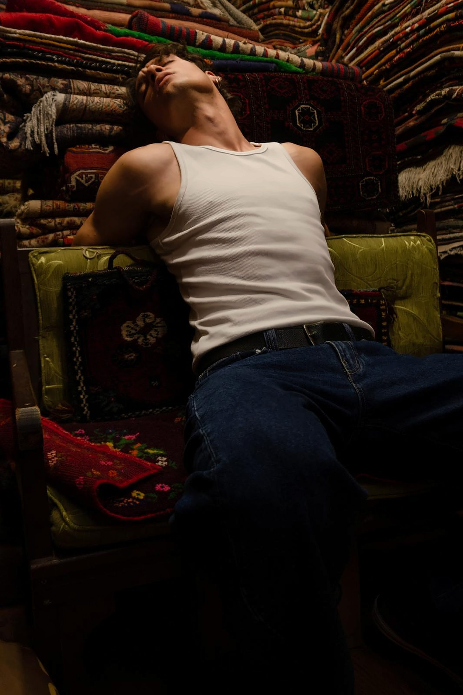
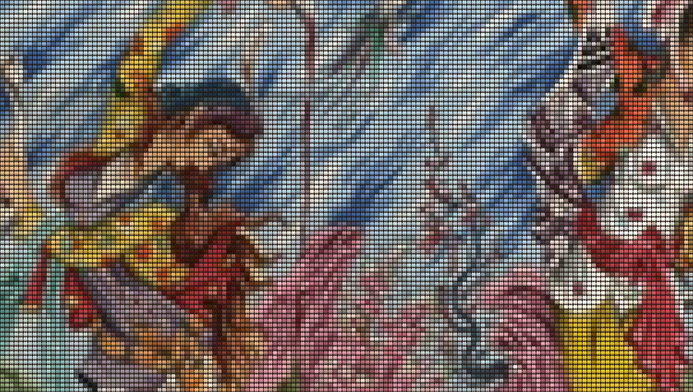
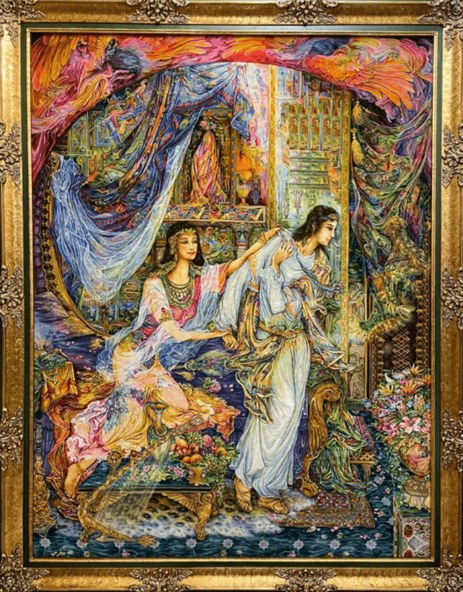
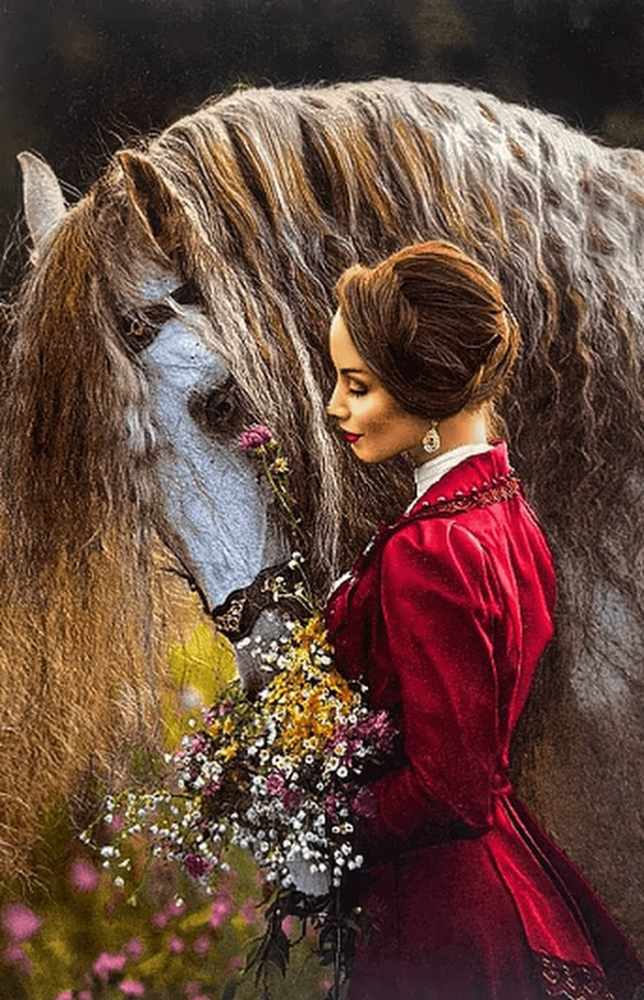
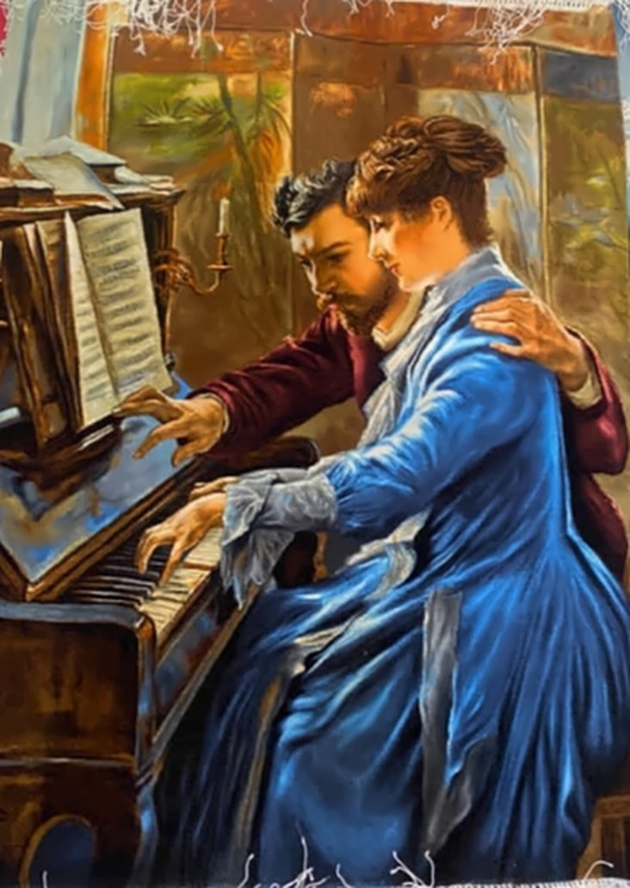
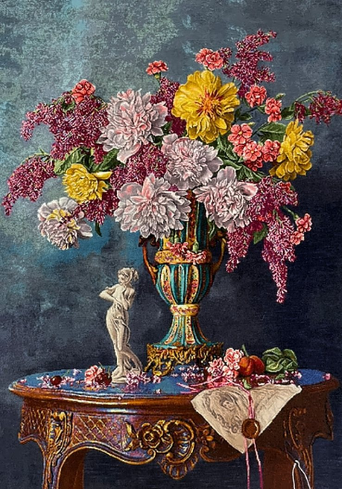
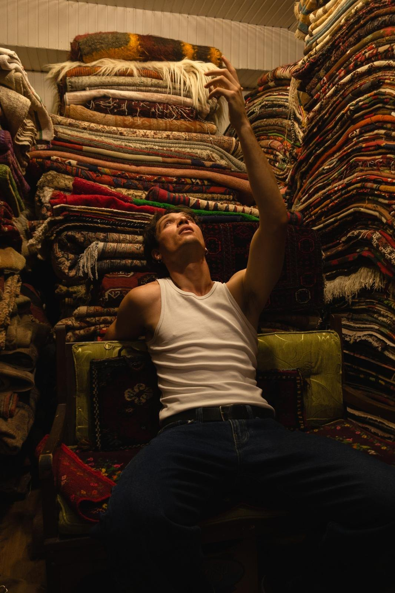
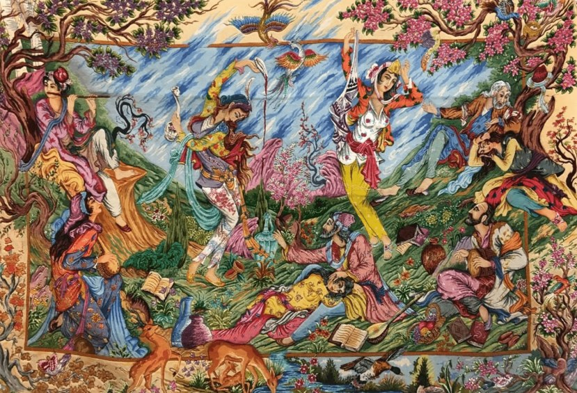

One knot.
A thousand years.
How a simple loop of wool, tied around two threads, became the art of Anatolia, Persia and the Turkmen steppe, and how to read it in the pieces you collect.
The knot, and the two ways to tie it
The oldest pile carpet we know, found frozen in a Scythian tomb at Pazyryk in the Altai mountains, is around two and a half thousand years old. Its weavers tied the same knot ours tie today.
A hand-knotted rug is built on a loom strung with vertical warp threads. Row by row, the weaver ties short lengths of yarn around pairs of warps, cuts them to form the pile, then beats down horizontal weft threads to lock the row in place. How the yarn wraps those two warps is the first thing a specialist looks for.
Reading the pile face
Each coloured dot is one knot. Count them across an inch and down an inch, multiply, and you have the knot density: the single best measure of how finely a design can be drawn.
Why density matters
A village rug might carry under a hundred knots per square inch. The finest silk workshop pieces exceed several hundred, enough to render a face, a petal, a fold of satin.
This map
A knot-by-knot rendering based on a silk piece in our archive. Zoom in until the individual knots separate.
Symmetrical · Turkish · Ghiordes
The yarn passes over both warps and both ends rise together between them. Strong, even and dense, it is the knot of Anatolia, the Caucasus and many Kurdish and Azeri weavers in north-west Iran.
How to spot it
Fold the rug back along a row: the pile emerges in tight, symmetrical tufts, and the back shows paired, balanced nodes.
Character
Slightly bolder outlines and a sturdier, more architectural drawing. Ideal for geometric design and for floors that see daily life.
Asymmetrical · Persian · Senneh
The yarn wraps one warp fully and passes beneath the other, so one end rises on each side. It can open to the left or to the right.
How to spot it
The pile leans subtly to one side. Specialists use the direction of the opening as a fingerprint for particular workshops and tribes.
Character
Allows knots to sit closer together, favouring fluid curves, fine tendrils and the curvilinear drawing of the Persian city workshops.
Kayseri and the Anatolian plateau
Anatolia has been knotting carpets since the Seljuk sultans; fragments from the thirteenth century survive from the Alaeddin Mosque in Konya.

Kayseri, ancient Caesarea at the foot of Mount Erciyes, sat on the caravan roads that crossed Cappadocia. The Seljuk caravanserai of Sultan Han still stands outside the city. Trade brought silk, and Kayseri's workshops became famous for it: finely knotted silk rugs and prayer rugs with mihrab arches, floral borders and a soft, luminous palette. The neighbouring town of Bünyan gave its name to a celebrated group of Kayseri-area rugs.
Kayseri also wove fine wool and, from the twentieth century, mercerised cotton, sometimes sold as "art silk". A knowledgeable dealer will always tell you which you are looking at. We do.
Across the valley in Nevşehir, at the heart of Cappadocia, our own silk pieces are woven today: pure silk, coloured with dyes drawn from plant roots, by hands trained in the same regional tradition. See the Cappadocia silks.
Elsewhere on the plateau, village and town traditions such as Uşak, Konya, Milas and Bergama produced bold geometric wool rugs, while the imperial workshops at Hereke wove silk of extraordinary fineness for the Ottoman palaces.
- Knot
- Symmetrical (Turkish)
- Materials
- Wool on wool; silk in Kayseri & Hereke
- Drawing
- Geometric to floral; prayer niches
- Palette
- Madder red, indigo, apricot, ivory
Hereke: silk for the sultans
On the shore of the Gulf of İzmit, east of Istanbul, the Ottoman court built a workshop whose name became shorthand for the finest silk rug a Turkish loom can make.

At Hereke densities, a single square centimetre holds a hundred knots or more.
A palace workshop
The factory, the Hereke Fabrika-i Hümayunu, was founded in 1843 to weave silk fabrics and upholstery for the new palaces of the Bosphorus, Dolmabahçe among them. Carpet weaving followed late in the century, when master weavers were brought in from Anatolia's established weaving centres. Their rugs furnished the imperial residences and were presented as diplomatic gifts.
The finest knot in Türkiye
Classic Hereke silk carries around ten knots by ten in every square centimetre, and the most ambitious pieces are said to reach far beyond. At that scale a weaver can draw like a miniaturist: palmettes, cloud bands, prayer arches and garden medallions adapted from Ottoman court and Safavid designs, in ivory, gold, soft reds and pale blues. Some pieces are brocaded with metal-wrapped thread that catches the light.
A name worth checking
"Hereke" is now also used as a style name, and many silk rugs carry it without ever having been woven there. Workshop pieces often bear a woven Hereke signature in the border, though a signature alone proves little. When we offer a silk piece, we tell you plainly where and how it was made.
- Knot
- Symmetrical (Turkish)
- Materials
- Silk on silk; some metal thread
- Drawing
- Ottoman court, prayer & medallion
- Palette
- Ivory, gold, soft red, pale blue
Persia and the city workshop
Under the Safavid shahs of the sixteenth century, carpet weaving became a court art. The Ardabil carpet, completed in 1539–40, is still one of the most admired objects of the Islamic world.

The Poet's Chamber, from our collection, in the miniature tradition.
Persian city rugs begin not on the loom but on paper. A designer draws the composition on a graph cartoon, the naqsheh, where every square is one knot. Weavers follow it with astonishing precision, which is why Persian rugs are known for flowing arabesques, central medallions, vines, palmettes and garden imagery.
The great centres each have a signature: Tabriz for its range and its pictorial work, Isfahan and Nain for very fine wool-and-silk, Kashan for classical medallions, Qom for pure silk. Most use the asymmetrical knot, though Tabriz and many north-western weavers tie the symmetrical one.
- Knot
- Mostly asymmetrical (Persian)
- Materials
- Kork wool, silk, cotton foundation
- Drawing
- Curvilinear, medallion, garden
- Palette
- Navy, crimson, ivory, celadon
The Turkmen and the gul
For the nomadic Turkmen tribes, a rug was furniture, architecture and identity at once: tent bags, door hangings, animal trappings, and floor rugs carried from pasture to pasture.
The heart of Turkmen design is the gul (göl): an octagonal emblem repeated in rows across a deep madder-red field. Each tribe had its own. The Tekke, Yomut, Salor, Saryk and Ersari guls can be told apart by a trained eye, the way a family crest is read.
Turkmen weaving is tight, low-piled and lustrous, built on wool from fat-tailed sheep. Many groups, the Tekke and Salor among them, tied an asymmetrical knot open to the left; the Yomut often used the symmetrical. In the market these rugs travelled under the trade name "Bokhara", after the city through which they were sold.
- Knot
- Asymmetrical, often open left
- Materials
- Lustrous wool; silk accents
- Drawing
- Repeating guls, strict geometry
- Palette
- Madder red to aubergine, ivory, indigo
The pictorial rug: painting with knots
When knots grow small enough, a rug stops being a pattern and becomes a picture. This is the tradition at the heart of our collection.
Pictorial rugs, sometimes called tableau rugs, translate paintings and miniatures into wool and silk. Workshops in Tabriz are especially renowned for them. A single figure may require hundreds of graded shades; the lustre of silk is reserved for skin, satin and light. Subjects range from European salon scenes and landscapes to Persian miniatures in the manner of the Isfahan school and sacred narratives.
See the pieces


Side by side
A collector's quick reference. Every region has exceptions; these are the tendencies a specialist looks for first.
| Kayseri, Cappadocia & Anatolia | Persian city | Turkmen | Pictorial | |
|---|---|---|---|---|
| Knot | Symmetrical | Mostly asymmetrical | Asymmetrical (open left) or symmetrical by tribe | Very fine, either type |
| Typical density | ~60–150 kpsi in wool; far higher in Kayseri & Hereke silk | ~120–400+ kpsi; Qom silk higher still | ~100–300 kpsi | Often several hundred kpsi |
| Foundation | Wool, or cotton in workshops | Cotton or silk | Wool, goat hair | Cotton or silk |
| Design | Geometric village drawing; floral and prayer designs in Kayseri | Curvilinear medallions, vines, gardens | Repeating guls in rows | Figurative scenes and landscapes |
| Design source | Memory and tradition, workshop cartoons | Designer's graph cartoon (naqsheh) | Tribal memory | Painting or miniature, charted knot by knot |
| Palette | Madder, indigo, apricot, ivory | Navy, crimson, ivory, celadon | Madder to aubergine | Hundreds of graded shades |
| Best for | Living floors, warm interiors | Formal rooms, classical interiors | Studies, libraries, collectors | Walls, galleries, statement rooms |
Stories of the loom
Short documentaries from the archive and the workshops we work with.


Now that you can read the knot, find the piece that speaks to you.